Kabinet — a front desk that works by the day
- Role
- UI/UX & Product Designer
- Platform
- Web, desktop
- Domain
- HealthTechB2B SaaS
- Team
- Solo concept
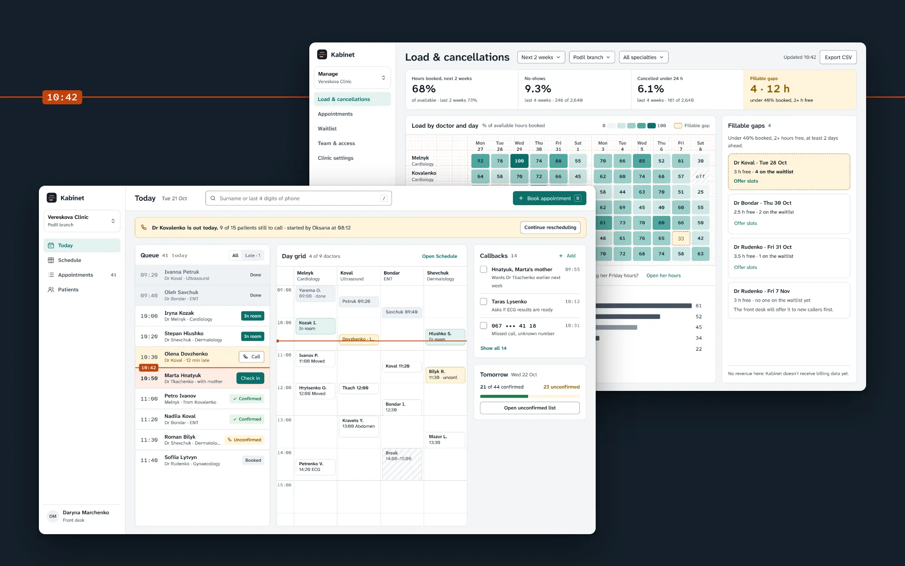
- Problem
- Admins rebuilt the day from five modules and a paper notebook: 23 screen switches an hour, and a sick doctor cost 50 minutes of calls.
- What I did
- Shadowed six admins, rebuilt the navigation around roles, and designed a Today workspace, a guided reschedule queue and a load heatmap.
- Result
- In a six-week pilot, phone booking fell from 2:10 to 1:25 and a sick day took 21 minutes, not 48. Utilisation barely moved.
Kabinet runs scheduling for 140 private clinics in Ukraine. I redesigned it for the people who use it most: the front desk.
Concept. Product, users and data are fictional.
Context
Kabinet grew around the doctor’s calendar, one module at a time: Schedule, Patients, Doctors, Reports, Settings. Front-desk admins make up 70% of daily users, but nobody had designed for their work. The PM’s brief: “Admins complain the system is slow. Make the front desk faster without breaking what clinics already know.” Owners added a goal of their own: doctor utilisation up 3 points, no-shows down 1.5.
This is a solo concept, written the way it would run in a team: a PM, four engineers, QA and me. I ran the research, the information architecture, the flows and screens, the tokens and the pilot plan. Nine weeks of design, six weeks of pilot.
Constraints
- The calendar grid is a 2019 component. Engineering can restyle it, not rewrite it this quarter.
- Billing lives in a separate system, so there is no revenue data.
- Admins must not see clinical data: visit type yes, diagnosis and notes no.
- Clinics pay per SMS, so every SMS feature is opt-in.
Process
Admins can’t describe their own screen-switching: it’s invisible to them. So observation led. We shadowed 6 admins in 3 clinics for 31 hours and logged 612 actions (never patient data), then interviewed them, 3 managers and an owner, and checked 30 days of navigation across all clinics.
The unit of work is the day, not the module. Admins rebuilt “today” 23 times an hour; 62% of navigation was a jump between Schedule and Patients. 5 of 6 kept callbacks on paper.
“I have the schedule on the left screen, the patient on the right, and the notebook under the keyboard. The notebook never crashes.”
Oksana, senior admin
Rare days define trust. A sick doctor happens about twice a month per clinic. We watched one: 17 appointments, 52 minutes of calls, 4 patients never reached, some texted from a personal phone.
“When Dr Kovalenko called in sick I just started from the top of the list. By ten I’d reached half of them, the rest I texted from my own phone.”
Daryna, admin
Managers want gaps, not charts. All three rebuilt the same Excel every Monday: which doctor is under-booked next week, and why people cancel.
A task map of 41 front-desk tasks decided what earns the home screen. A card sort with 18 people split the audience: admins grouped by time, managers by object. A tree test checked the new structure before any screens: 68% task success in round 1, 84% in round 2.
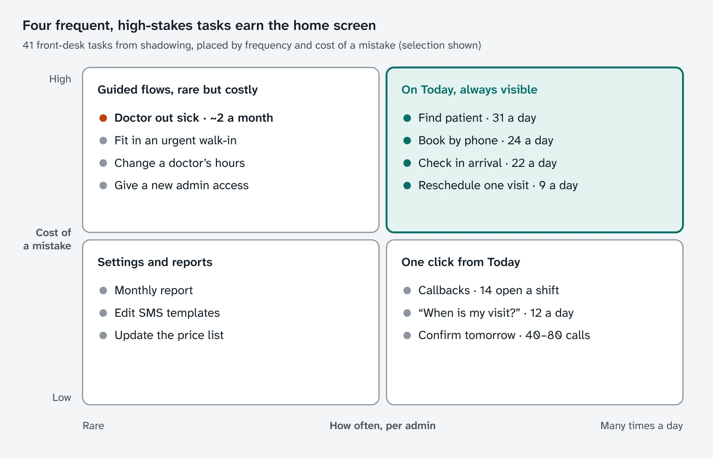
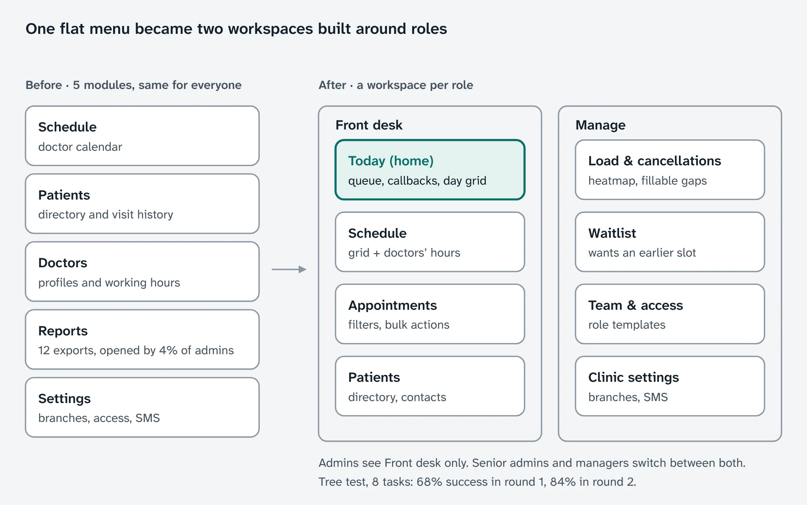
Key decisions
Where does the admin’s day live?
Options: keep the modules and add tabs, a Today workspace per role, or one super-calendar. Chose Today: it fixes the switching without the calendar rewrite the third option needed. Cost: two navigation models to maintain, and Settings and Reports moved one level deeper for admins.
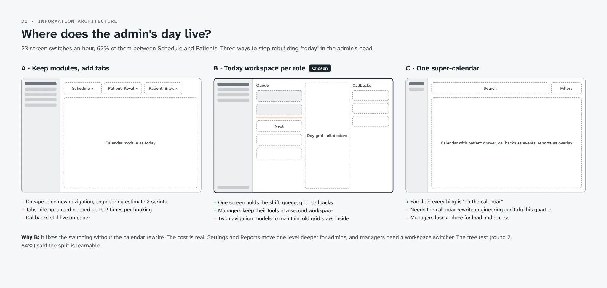
A doctor calls in sick: who moves the 15 patients?
Options: a bulk “Move to” in the table, a guided reschedule queue, or an SMS link where patients pick a time themselves. Chose the queue: a bulk move changes the book, but someone still calls 15 people. The SMS link stayed only for patients who don’t answer, in clinics that pay for SMS. Cost: v1 proposes slots only within the same specialty and branch, a backend limit.
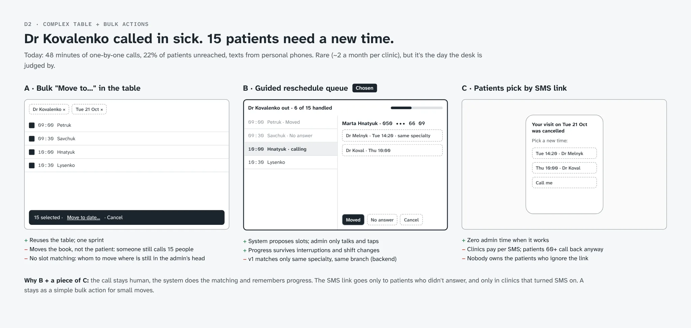
What replaces the Monday Excel?
Options: KPI tiles and trend charts, a heatmap of load by doctor and day, or a plain list of fillable gaps. Chose the heatmap with the gaps beside it: it points at a doctor and a day, so at something to do. Cost: no revenue on it. Kabinet has no billing data, and a made-up number would cost more trust than an empty space.
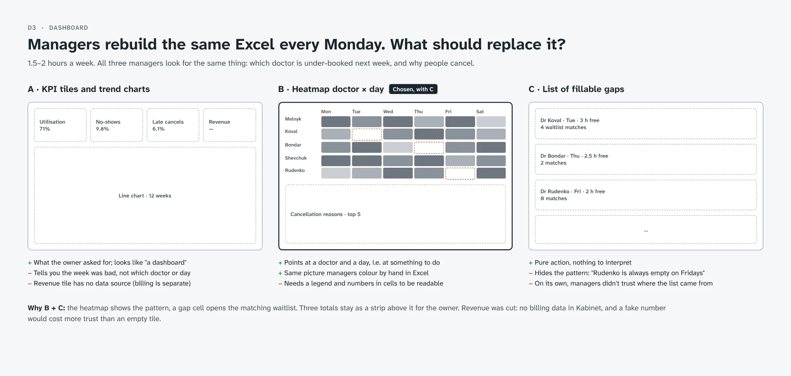
A shift on one screen
Today holds the queue by time, the day grid for all doctors, callbacks that used to live on paper, and tomorrow’s confirmations. Search takes a surname or the last four digits of a phone, because that’s what a caller says first.
The now line is the product’s one memorable element: a thin orange line with the time, the only use of that colour. Past rows go grey, the next patient is highlighted. Everything else stays quiet: cool greys, one teal for actions, Atkinson Hyperlegible for text and its mono cut for times and phone numbers, which admins read aloud.
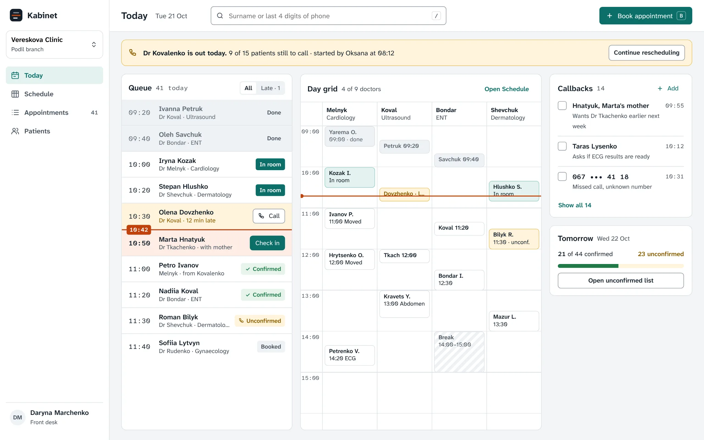
A sick day in 21 minutes
The appointments table is built for the phone: team views as tabs, filters as removable chips, a bulk bar for reminders and confirmations, and a failed SMS shown in its row.
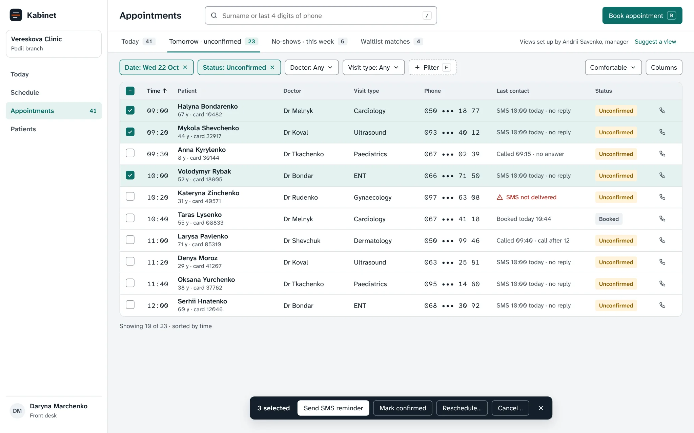
The reschedule queue keeps the original order, shows the current patient’s full number, a line to say and three proposed slots. One key per outcome, because the admin is on a headset. Progress is shared, so another admin can take over mid-list.
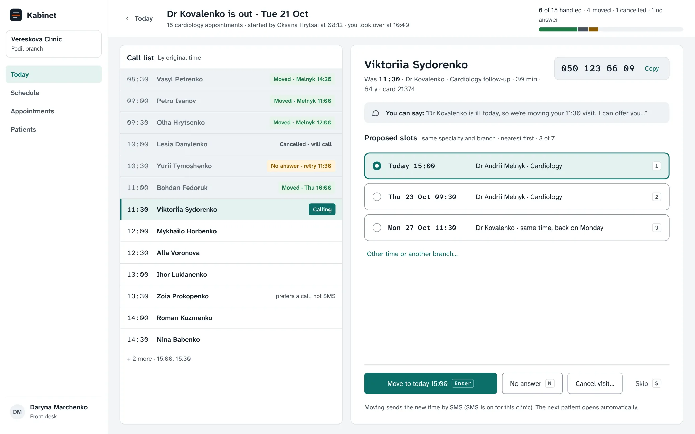
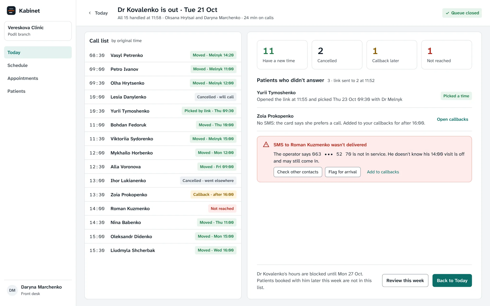
Gaps a manager can fill
Numbers sit in every heatmap cell, so colour is secondary. A gap (under 40% booked, 2+ hours free, 2+ days ahead) opens the matching waitlist, and the manager sends one offer: the first patient to pick a time gets it.
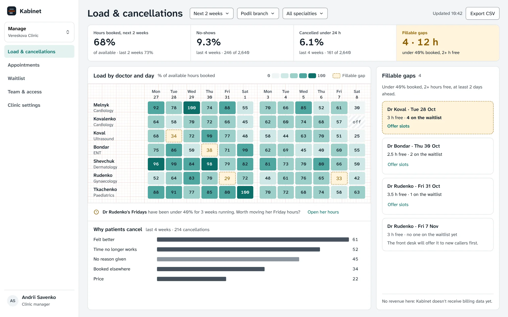
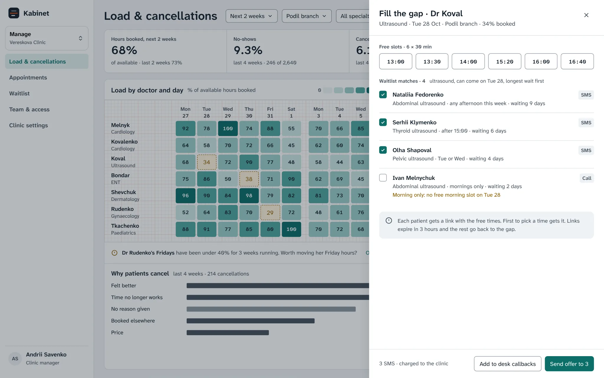
Access by role, not by checkbox
Five role templates replace a matrix of 60 checkboxes, scoped by branch, with one exception switch for small branches. Diagnoses and doctor’s notes are never visible to the front desk.
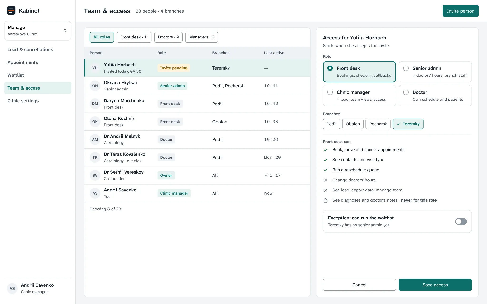
Row height, cell padding and text size are tokens with two modes: Comfortable for admins on a laptop, Compact for managers reviewing a week on a big screen. Every text pair passes WCAG AA, checked by a script.
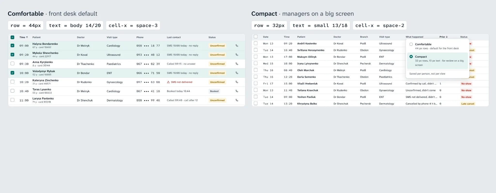
States and edge cases
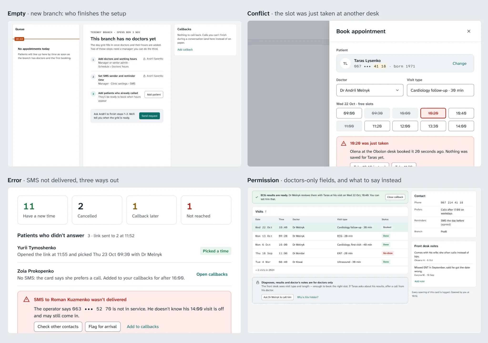
Result
Two clinics ran the new workspace for six weeks; two similar clinics were the control. Small sample, so we read direction, not significance.
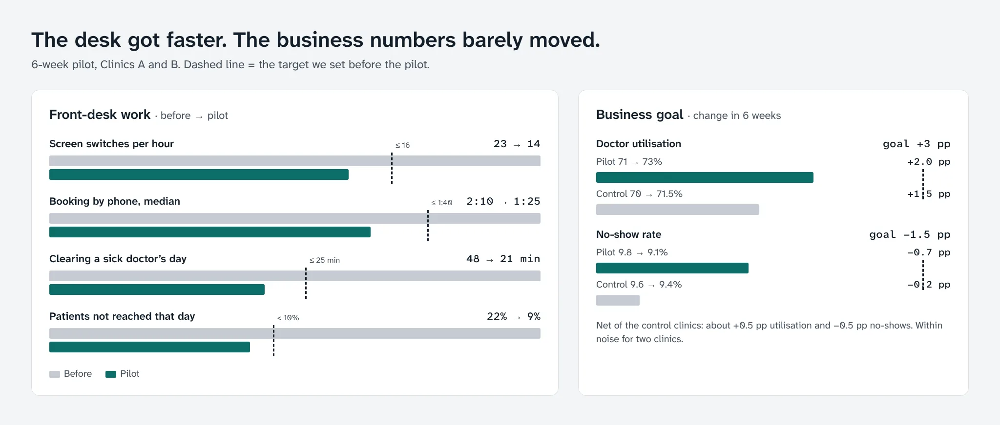
- Front desk. Screen switches fell from 23 to 14 an hour, phone booking from 2:10 to 1:25. A sick doctor’s day took 21 minutes instead of 48, and patients not reached that day fell from 22% to 9%. Scheduling tickets fell 18%.
- Business goal, missed. Net of the control clinics, utilisation rose about half a point and no-shows fell about half a point, against +3 and −1.5.
- One hypothesis failed. Only 2 of 16 admins saved their own table view, against a 40% target. “I don’t make lists. Andrii makes them, I call from them.” Saving views moved to managers, who publish them for the team.
Today and the queue shipped to all 140 clinics; the dashboard stayed a beta for 30, without revenue.
What I learned
- Watch before you believe. The “my own list” idea came from interviews; the shadowing had already shown nobody used filters.
- Design for the rare day. Sick days are twice a month, but they decide whether admins trust the system.
- A dashboard can show a gap, not fill it. The small clinic had nobody on its waitlist to offer slots to.